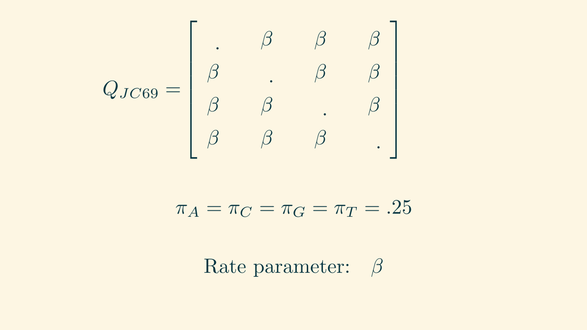
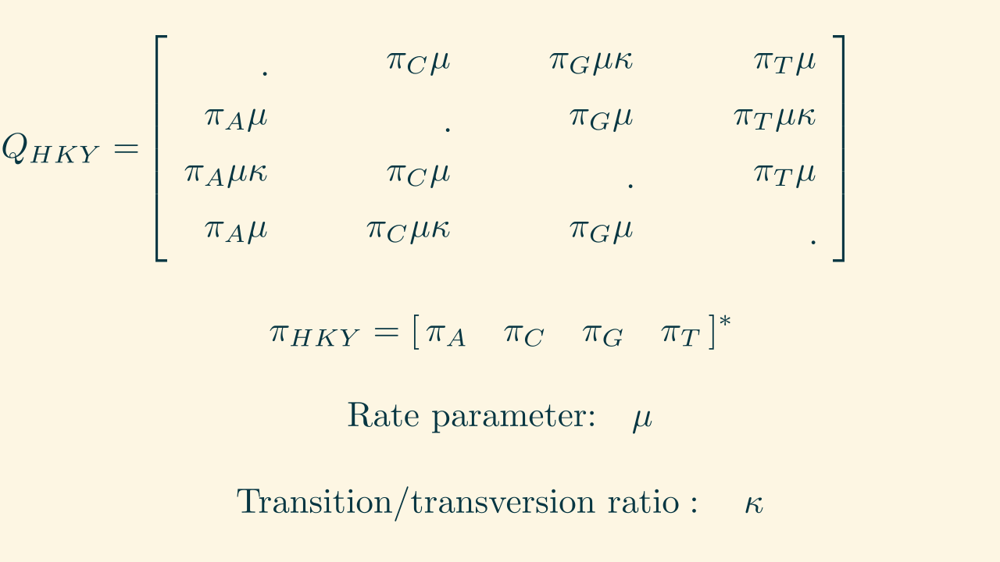
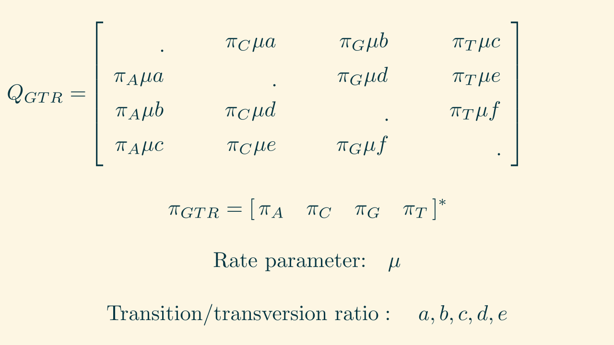

Phylogenetics I
Trees, tree likelihoods, and models of evolution
Public Health Modeling Unit
2025-08-05
Barney Isaksen Potter
Series overview
- Trees, tree likelihoods, and models of evolution
- Rate heterogeneity and maximum likelihood
- Bayesian phylogenetics, Markov chain Monte Carlo, and summary trees
- Phylogeography and Kingman's coalescent
What do the data look like?
Probability vs. likelihood
Some notation
- $P(X)$: probability of $X$
- $P(X|Y)$: conditional probability of $X$ given $Y$
- $\theta$: model parameters
- $\mathcal{L}(\theta|X)$: likelihood of $\theta$ given data $X$
$\mathcal{L}(\theta | X) = P(X | \theta)$
So what is the probability of a tree?
Two key assumptions:
- Each site evolves independently.
- Each lineage evolves independently.
Continuous Time Markov Chain model of nucleotide evolution
JC69: Jukes and Cantor (1969)

HKY: Hasegawa, Kishino, and Yano (1985)

GTR: Tavaré (1986)
